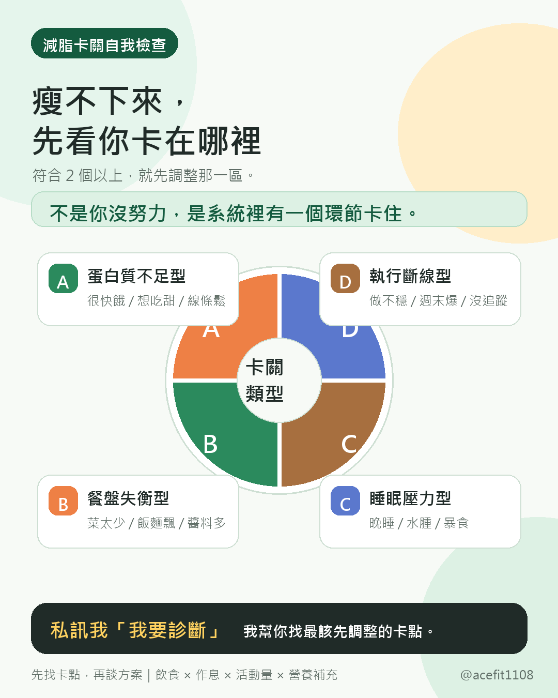
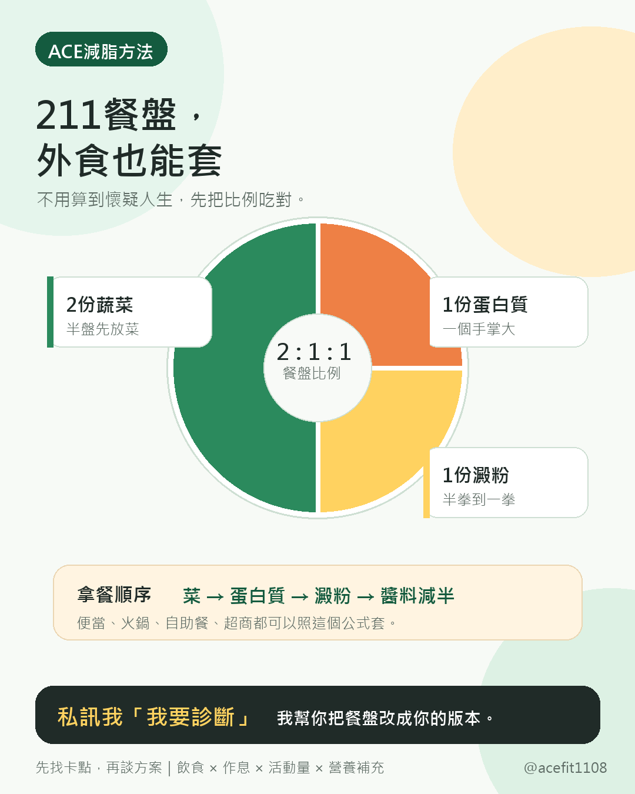
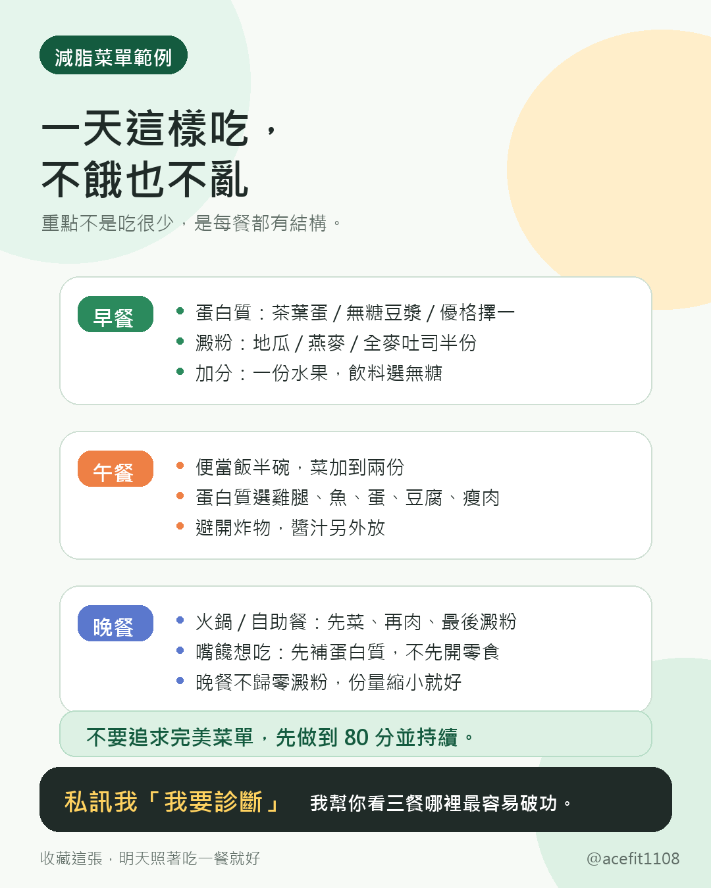
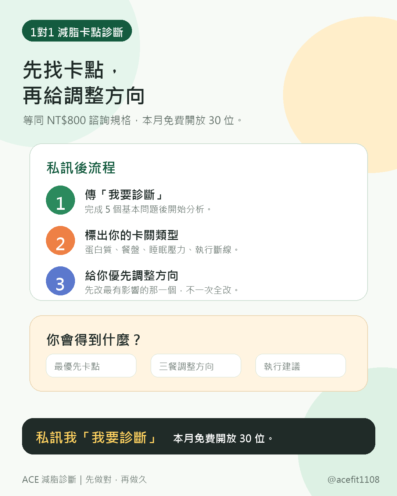

蛋白質不足型
很快餓、想吃甜、線條鬆。

自我檢查
看到符合兩個以上，就先調整那一區。不要一次全改，先抓最有影響的卡點，才不會越減越累。
很快餓、想吃甜、線條鬆。
菜太少、飯麵飄、醬料多。
晚睡、水腫、容易暴食。
做不穩、週末爆、沒追蹤。
ACE 方法
減脂不需要一開始就搞到很複雜。先用 211 餐盤，把外食、便當、火鍋、自助餐都變成可執行。


私訊後流程
我會先請你回答幾個基本問題，看你目前的飲食與作息狀況。
從蛋白質、餐盤、睡眠壓力、執行斷線找出最明顯的卡點。
先改最有影響的那一個，不一次全改，才有機會真的做久。
1對1 減脂卡點診斷
如果你吃得健康、有運動，卻還是卡關，我會幫你找出目前最該優先調整的減脂盲點。
加 LINE 後傳「我要診斷」，完成 5 個基本問題，我會幫你做初步分析。
加 LINE 傳「我要診斷」